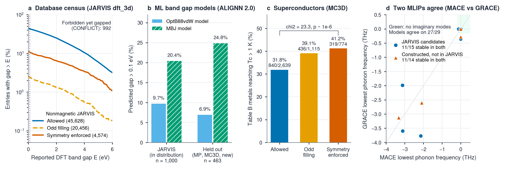

A physics guardrail for AI driven materials discovery
An exact symmetry check that tells databases, ML models, generative design and AI agents, in milliseconds and without DFT, when a crystal cannot be an insulator.
Watanabe, Po, Zaletel and Vishwanath (Phys. Rev. Lett. 117, 096404, 2016) proved that for a nonmagnetic crystal, the space group and the number of electrons per primitive cell, ν = Σ Zi, decide whether a band insulator is possible at all. symlint implements this for all 230 space groups and needs only the structure.
| Verdict | Meaning |
|---|---|
allowed | ν is in the allowed set: a band insulator is possible (not guaranteed) |
odd_filling | ν is odd: cannot be a nonmagnetic band insulator |
symmetry_enforced | ν is even but not allowed: forced gapless by nonsymmorphic symmetry (metal or nodal semimetal) |
$ symlint check tests/data/SrIrO3_Pnma_mp1105160.cif Space group: Pnma (#62) [symprec=0.001] Electron count (nu): 556 Allowed set S_G (soc): 8N Verdict: symmetry_enforced (can_be_insulator=False) Tolerance check (0.1): SG #62 (Pnma), nu=556, verdict=symmetry_enforced, sensitive=False
Median time 1.7 ms per structure. Also available as a Python API, an MCP tool for LLM agents and a marimo app.

git clone https://github.com/Asif-Iqbal-Bhatti/symlint.git
cd symlint
pip install -e .
symlint check my_structure.cif # any format ASE can read
symlint mcp # MCP server for AI agents
marimo run notebooks/demo.py # browser app (pip install -e ".[demo]")
from symlint import check_file, classify_filling
res = check_file("my_structure.cif")
print(res["verdict"], res["explanation"])
print(classify_filling(nu=316, sg_number=62)) # 'symmetry_enforced'
More in examples/: screening a folder of structures, constraining any band gap model, connecting an LLM agent.